AXYZ 5010 ATC CNC Router — 5′ × 10′ with Vacuum System
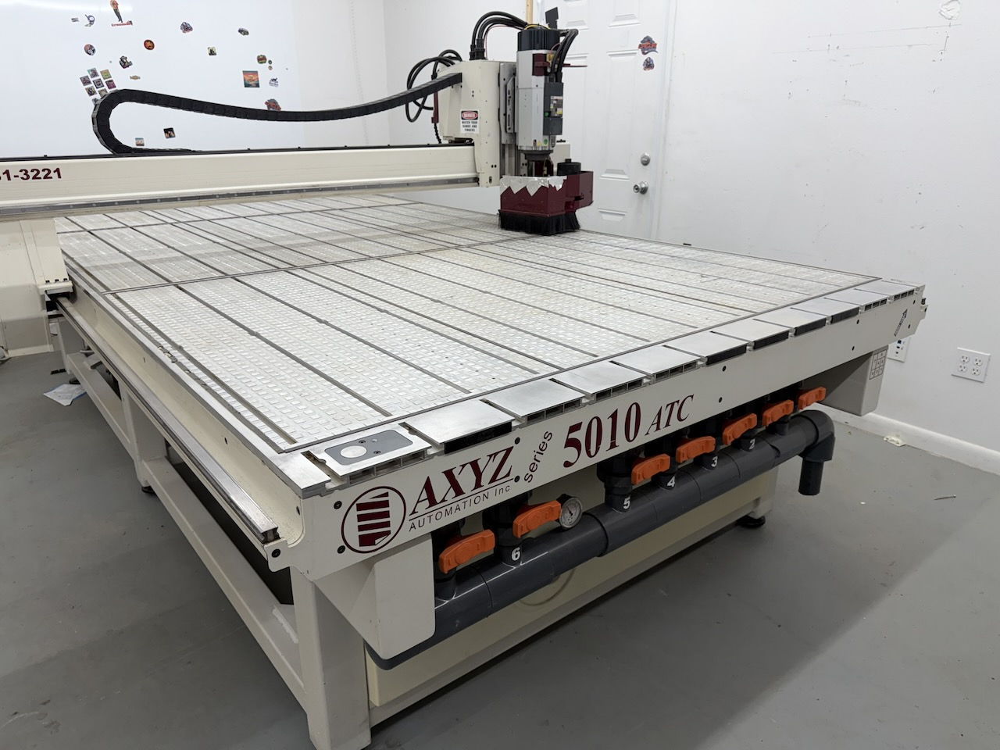
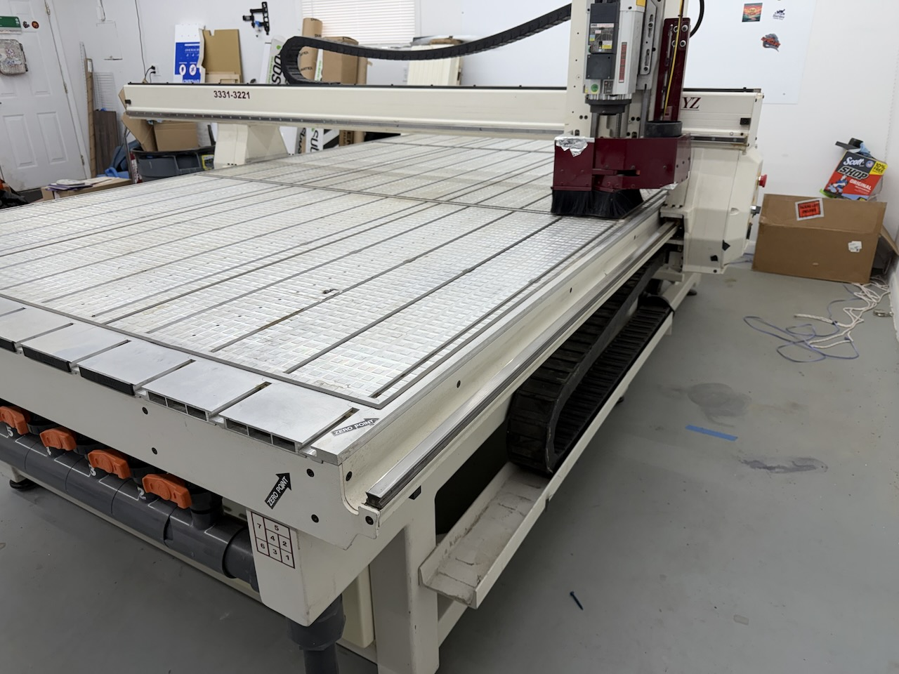
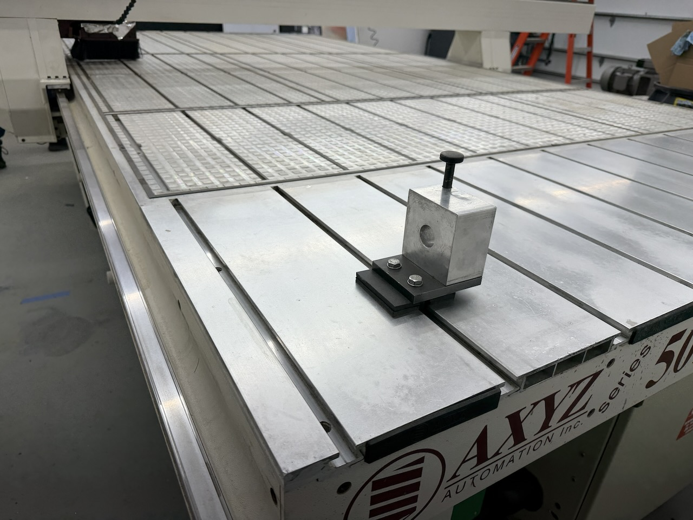
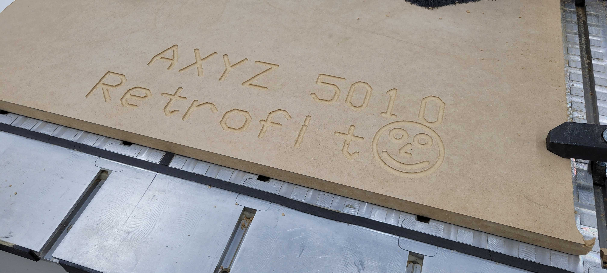
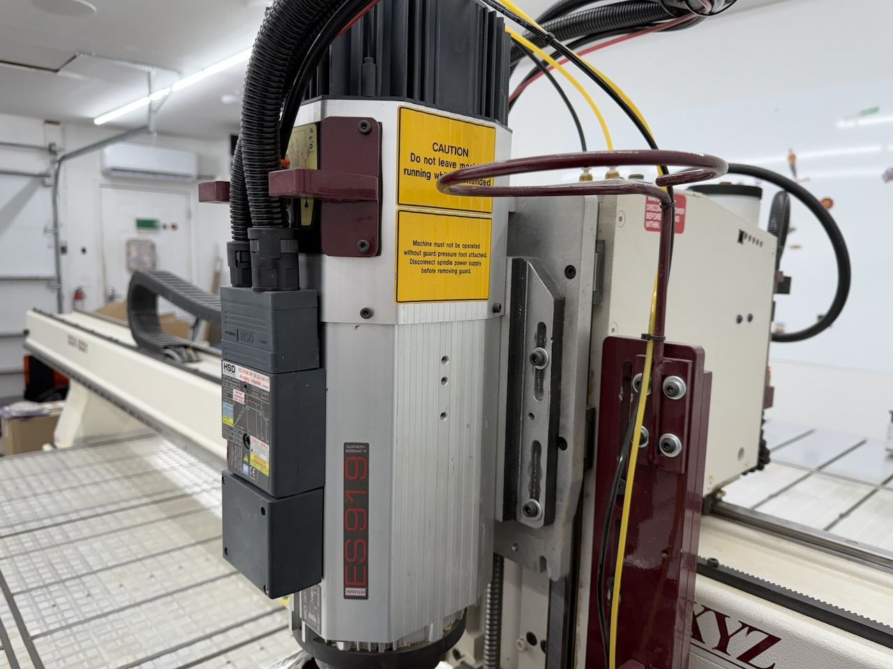
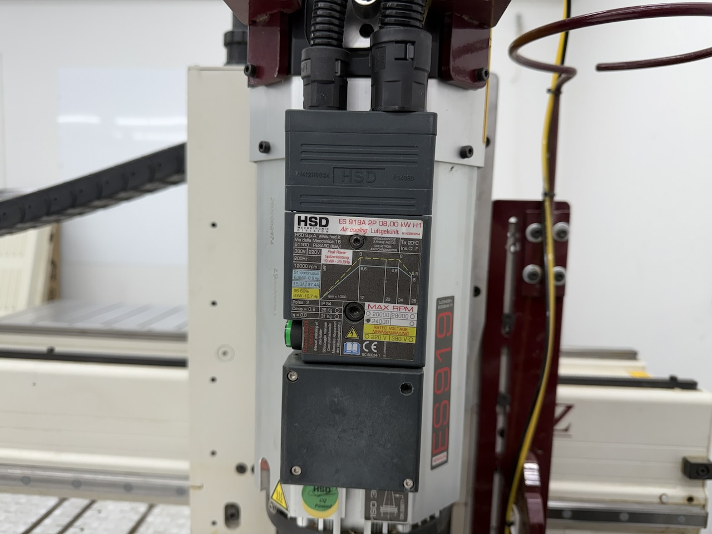
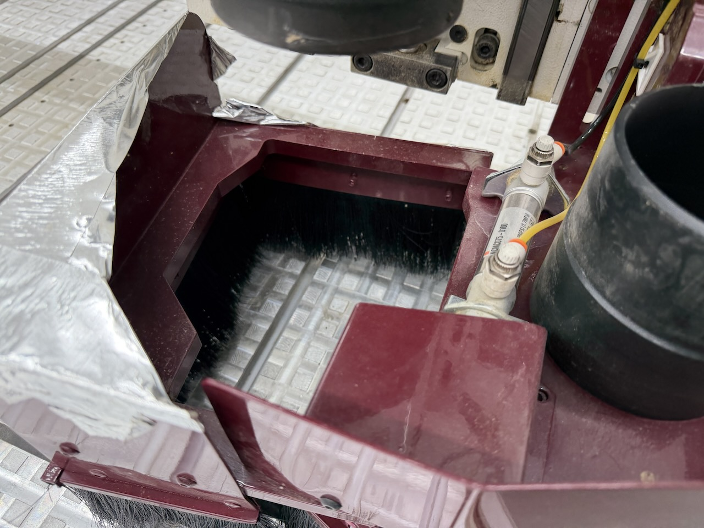
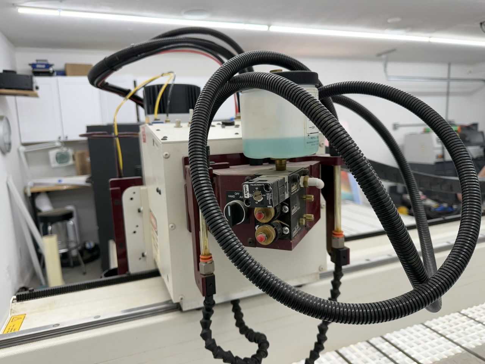
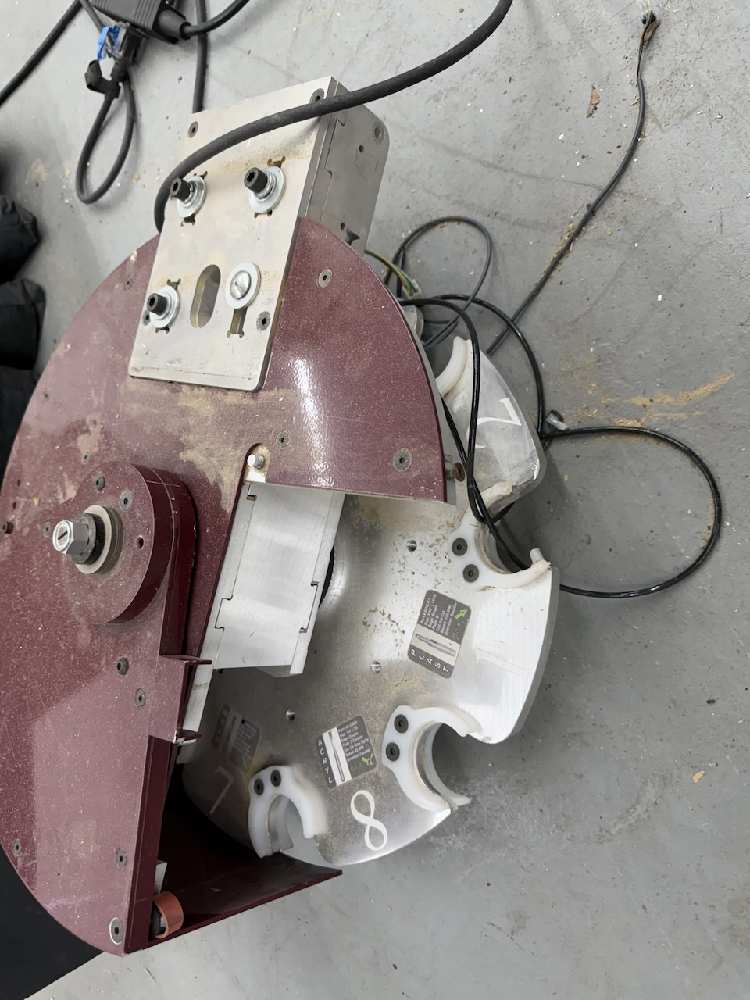
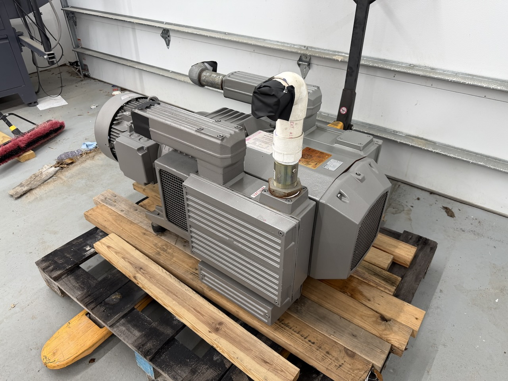
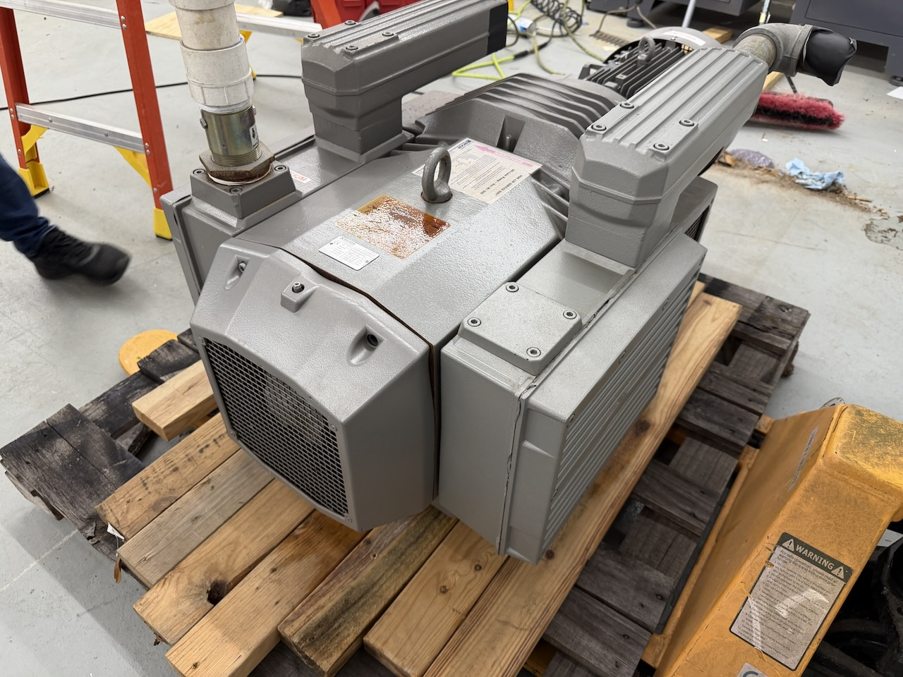
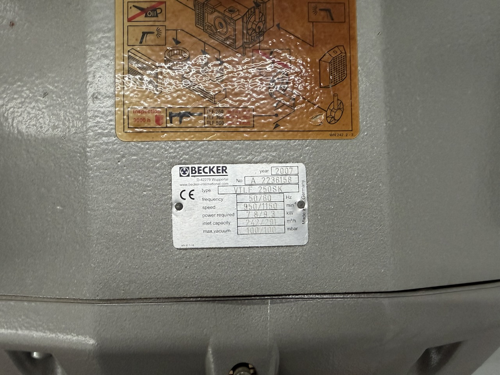
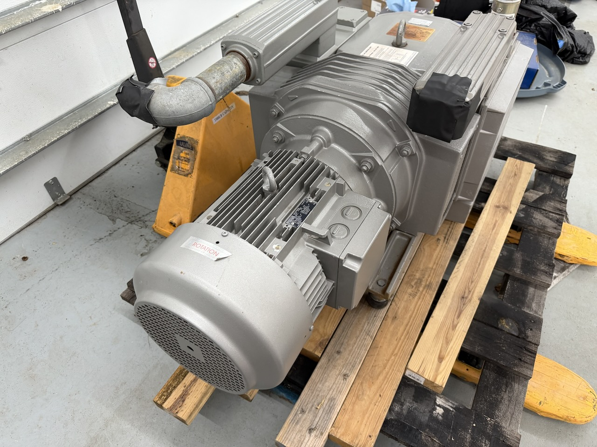
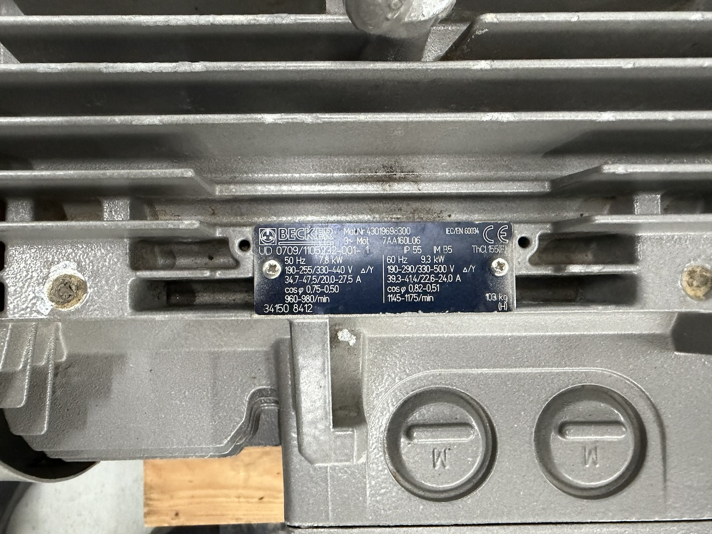
AXYZ Automation Series 5010 ATC — a full 5′ × 10′ industrial CNC router built for production sheet work in wood, MDF, plastics, composites, acrylic, and aluminum. This is a heavy steel-frame machine on a fixed table, not a light-duty hobby gantry: the table alone weighs more than most complete benchtop routers, and it was designed to run all day in a cabinet, sign, or plastics shop.
The machine has been through a Centroid control retrofit, which is the single biggest thing separating it from the other used AXYZ machines on the market. The original obsolete control has been replaced with a current, fully supported Centroid CNC system running standard G-code — parts are available, documentation is available, and you are not chasing discontinued proprietary boards five years from now. It posts from Fusion 360, VCarve, Aspire, and any other CAM package that outputs G-code. The video above shows the machine cutting a test file after the retrofit.
Work holding is a 7-zone vacuum table with individually valved zones on a manifold, so you can pull vacuum only under the sheet you are actually cutting instead of bleeding the whole table. The aluminum T-slot rails accept mechanical clamping and fixtures where vacuum alone will not hold. A zero-point reference corner is marked on the frame for repeatable sheet indexing.
The Becker VTLF 250SK vacuum pump goes with the machine — a 12.5 HP dry rotary-vane pump moving 291 m³/h (about 171 CFM) at 100 mbar. Buying a comparable pump separately is typically a five-figure line item, and pairing an orphaned router with the wrong pump is one of the most common ways these machines end up disappointing their new owner. Also included: the HSD 8 kW automatic tool change spindle, the gantry dust collection shoe, and a Unist mist lubrication system for cutting aluminum and plastics.
| Make / model | AXYZ Automation Series 5010 ATC |
| Table size | 5′ × 10′ — handles full 4′ × 8′ and 5′ × 10′ sheets |
| Control | Centroid CNC retrofit — standard G-code |
| Spindle | HSD ES919A, 8.0 kW air-cooled, automatic tool change |
| Spindle output | 6.8 kW / 9.1 HP continuous (S1) — 8.0 kW / 10.7 HP (S6 60%) |
| Spindle speed | Up to 24,000 RPM, inverter controlled |
| Tool taper | ISO30 |
| Tool changer | 8-position rotary carousel (see condition notes) |
| Work holding | 7-zone valved vacuum table + aluminum T-slot rails |
| Vacuum pump | Becker VTLF 250SK dry rotary vane, 2007 |
| Vacuum capacity | 291 m³/h (~171 CFM) @ 60 Hz, 100 mbar max vacuum |
| Pump motor | 9.3 kW / 12.5 HP, 3-phase, IP55 |
| Dust collection | Gantry-mounted brush shoe with duct outlet |
| Lubrication | Unist mist coolant system, dual flexible nozzles |
| Power | Three-phase — machine and pump both 3-phase |
| Approx. footprint | About 88″ × 144″ plus clearance for gantry travel |
| Materials | Wood, MDF, plywood, plastics, acrylic, composites, aluminum |
- ✓ AXYZ 5010 ATC router — frame, gantry, and 7-zone vacuum table
- ✓ Centroid CNC control retrofit, installed and cutting
- ✓ HSD ES919A 8 kW automatic tool change spindle
- ✓ Becker VTLF 250SK vacuum pump with drive motor
- ✓ 8-position rotary ATC tool carousel
- ✓ Gantry dust collection shoe with brush skirt
- ✓ Unist mist lubrication system
- ✓ Vacuum manifold with zone valves and gauge
Working machine in production condition — cuts today, with honest cosmetic wear from shop use.
- Centroid control retrofit complete and running — see the test cut video above
- Spindle runs and cuts; dust shoe and mist lubrication system in place
- Vacuum table holds across all 7 zones, each on its own valve
- Becker vacuum pump is on a pallet, removed for the move — sells with the machine
- ATC carousel is currently off the machine. It is included and mechanically functional, but automatic tool change has not been programmed into the Centroid control. As sold, plan on manual tool changes until the ATC is configured.
- Cosmetic wear consistent with age and production use — paint scuffs, shop grime, spoilboard surface as shown
- Inspection strongly encouraged — come see it run before you commit
Complete the short form below to receive our contact information and pickup address.